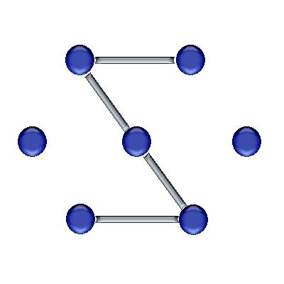

Subdue - Version 5.0
Subdue Home Page: http://ailab.uta.edu/subdue
The Subdue knowledge discovery system finds interesting and repetitive
subgraphs (substructures) in the input data, which is a labeled,
directed graph. Subdue behaves as a concept learner if negative
graphs are given. Subdue can be used to generate a hierarchical,
conceptual clustering of the input graph by specifying multiple
iterations. See the -eval and -iterations options
for more information on concept learning and clustering modes. Below
are descriptions of Subdue's command-line options, input format and
several auxiliary programs.
Platforms
Subdue has been developed and tested on Redhat Linux 7.3 and 8.0 using gcc,
but should compile and run on most UNIX systems. A windows port is
forthcoming.
Usage
subdue [-beam #]
[-eval #]
[-iterations #]
[-limit #]
[-nsubs #]
[-out <outfile>]
[-output #]
[-overlap]
[-prune]
[-ps <psfile>]
[-threshold #]
[-undirected]
[-valuebased]
<inputfile>
Command-Line Options
- -beam #
- This parameter specifies the beam width of Subdue's search. Only
the best beam substructures (or all the substructures
with the best beam values) are kept on the frontier of
the search. The exact meaning of the beam width is determined by
the -valuebased option described below. Default is 4.
- -eval #
- Subdue has three methods available for evaluating candidate
substructures.
(1) Minimum Description Length (MDL) - The value of a
substructure S in graph G is value(S,G) = DL(G)/(DL(S)+DL(G|S)),
where DL is the description length in bits, and (G|S) is G
compressed with S. If a negative graph Gn is present, then
value(S,Gp,Gn) =
[DL(Gp)+DL(Gn)]/[DL(S)+DL(Gp|S)+DL(Gn)-DL(Gn|S)]. MDL is the
default evaluation method.
(2) Size - The value of a substructure S in graph G is value(S,G)
= size(G)/(size(S)+size(G|S)), where
size(g)=(#vertices(g)+#edge(g)), and (G|S) is G compressed with
S. If a negative graph Gn is present, then value(S,Gp,Gn) =
[size(Gp)+size(Gn)]/[size(S)+size(Gp|S)+size(Gn)-size(Gn|S)].
The size measure is faster to compute than the MDL measure, but
less consistent.
(3) Set Cover - The value of a substructure S is computed as the
number of positive examples containing S plus the number of
negative examples not containing S, this quantity divided by the
total number of examples. If this evaluation method is chosen,
then the compression done at the end of each iteration is
replaced by just removing all positive examples containing S.
- -iterations #
- The number of iterations made over the input graph in which the
best substructure from the previous iteration is used to compress
the graph for use in the next iteration. Default is 1, which
implies only one pass, no compression. A value of 0 causes
Subdue to iterate until no compression is possible, which
produces a hierarchical, conceptual clustering of the input
graphs. If Subdue is using the set-cover evaluation method (see
the -eval option), then iterations stop when no more
positive examples can be removed.
- -limit #
- The number of different substructures to consider in each
iteration. The default value is computed based on the input graph
as (Vertices + Edges) / 2.
- -maxsize #
- This argument specifies the maximum number of vertices that can
be in a reported substructure. Larger substructures are pruned
from the search space. Default is the number of vertices in the
input graph.
- -minsize #
- This arguments specifies the minimum number of vertices that must
be in a substructure before it is reported. Default is 1.
- -nsubs #
- This argument specifies the maximum length of the list of best
substructures found during the discovery. The default value is
3.
- -out <outfile>
- If given, this option writes machine-readable output to the given
file name. The file will contain the best substructure found at
each iteration, each prefaced by the SUB_TOKEN string specified
in subdue.h (usually just "S").
- -output #
- This argument controls the amount of Subdue's screen output.
Valid values are:
(1) Print best substructure found at each iteration.
(2) Print -nsubs best substructures at each iteration. Default.
(3) Same as 2, plus prints the instances of the best substructures.
(4) Same as 3, plus prints substructure countdown and the best
substructure found so far.
(5) Same as 4, plus prints each substructure considered.
- -overlap
- Subdue normally will not allow overlap among the instances of a
substructure. Specifying this argument will allow overlap.
During graph compression an OVERLAP_<iteration> edge is
added between each pair of overlapping instances, and external
edges to shared vertices are duplicated to all instances sharing
the vertex. Allowing overlap slows Subdue considerably.
- -prune
- This option tells Subdue to prune the search space by discarding
substructures whose value is less than that of their parent's
substructure. Since the evaluation heuristics are not monotonic,
pruning may cause Subdue to miss some good substructures, but improves
the running time. The default is no pruning.
- -ps <psfile>
- This option allows the input of a file containing predefined
substructures. These substructures are used to compress the
input graph. The order of the substructures in the file is
important, because the substructures are tried in order and
compression based on an earlier substructure may remove instances
of later substructures. Also, the matching process follows the
constraints of the -overlap and -threshold
options. See the section on "Predefined Substructure Input File
Format" for a description of the format of this file. Note that
this is essentially subgraph isomorphism and therefore
NP-Complete, i.e., exponential running time in the size of the
input graph.
- -threshold #
- The fraction of the size (vertices+edges) of an instance by which
the instance can be different (according to the graph
transformation costs defined in subdue.h) from the substructure
definition. I.e., the graphs match if matchcost(sub,inst) <=
size(inst)*threshold. Default is 0.0, which implies graphs must
match exactly.
- -undirected
- Subdue assumes that edges in the input graph file defined using
`e' are directed edges. Specifying this argument makes
these edges undirected. Note that graph file edges defined with
`u' are always undirected, and edges defined with
`d' are always directed.
- -valuebased
- Normally, Subdue's beam width implies that only the beam
best substructures are kept on the frontier of the search. If
the -valuebased option is given, then the beam width is
interpretted as keeping all the substructures with the top
beam values on the frontier of the search.
Input File Format
Subdue's input file consists of one or more graphs, each starting from
vertex 1. Each graph is prefaced by either "XP", indicating a
positive example, or "XN" indicating a negative example. If the first
(or only) graph in the file is positive, then its "XP" can be
omitted. Each graph is a sequence of vertices and edges defined as
follows.
A vertex is defined as
v <#> <label>
where <#> is a unique vertex ID for the graph and
<label> is any string or real number. Strings
containing whitespace or the comment character must be surrounded by
double-quotes. Vertex IDs for a graph must start at 1 and must
increase by 1 for each successive vertex.
An edge is defined as one of the following:
e <v1> <v2> <label>
d <v1> <v2> <label>
u <v1> <v2> <label>
where <v1> and <v2> are the vertex ID's
for the source vertex and the target vertex respectively and
<label> is any string or real number. Strings
containing whitespace or the comment character must be surrounded by
double-quotes. Edges beginning with `e' are assumed directed
unless option `-undirected' is specified at the command line,
in which case all `e' edges become undirected. Edges
beginning with `d' are always directed, and edges beginning
with `u' are always undirected.
Comments are designated by the percent `%' sign. Anything
after a `%' until the end of the line will be ignored (unless
the % is part of a quoted label).
Several sample graph files are included in the graphs
directory.
Predefined Substructure Input File Format
The optional predefined substructure file follows the format of the
main input file, except that each graph is prefaced by "PS",
indicating the start of a predefined substructure. The "PS" is
optional for the first graph in the file.
Auxiliary Programs
Inexact Graph Match (gm)
Usage
gm <graphfile> <graphfile>
The inexact graph match program computes the cost of transforming the
larger of the input graphs into the smaller according to the
transformation costs defined in subdue.h. The program
returns this cost and the mapping of vertices in the larger graph to
vertices in the smaller graph. The graph file format is the same as
for Subdue, but with only one graph per file.
Subgraph Isomorphism (sgiso)
Usage:
sgiso [-dot <dotfile>] [-overlap] [-threshold #]
<graphfile1> <graphfile2>
Finds and prints all instances of g1 in g2. If -overlap is given,
then instances may overlap in g2. If -threshold is given, then
instances may not be an exact match to g1, but the cost of
transforming g1 to the instance is less than the threshold fraction of
the size of the larger graph. Default threshold is 0.0, i.e., exact
match. The graph file format is the same as for Subdue, but with only
one graph per file. Note that this is an NP-Complete problem, i.e.,
exponential running time. If the -dot filename is given,
then g2 is written to the file in dot format, but with instances
highlighted in blue. More information about dot format and the
programs to visualize dot graphs can be found at the GraphViz
website at AT&T Research Labs.
Minimum Description Length (mdl)
Usage:
mdl [-dot <dotfile>] [-overlap] [-threshold #]
<graphfile1> <graphfile2>
Computes the description length of g1, g2 and g2 compressed with g1
along with the final MDL compression measure:
dl(g2)/(dl(g1)+dl(g2|g1). Also, prints the size-based compression
information. If -overlap is given, then instances of g1 may overlap
in g2. If -threshold is given, then instances in g2 may not be an
exact match to g1, but the cost of transforming g1 to the instance is
less than the threshold fraction of the size of the larger graph.
Default threshold is 0.0, i.e., exact match. The graph file format is
the same as for Subdue, but with only one graph per file. If the
-dot filename is given, then the compressed graph is written
to the file in dot format, with instances replaced by "SUB" vertices
and overlap indicated by "OVERLAP" edges. More information about dot
format and the programs to visualize dot graphs can be found at the GraphViz
website at AT&T Research Labs.
Substructure to Dot Format Conversion (subs2dot)
Usage
subs2dot <subsfile> <dotfile>
Writes the substructures defined in <subsfile> to
<dotfile> in dot format. The substructures file is in
the format produced by the Subdue -out option above. Each
substructure is defined as a subgraph cluster, and if a substructure
S2 refers to a previously-discovered substructure S1, then a directed
edge is added from S1's cluster to S2's cluster. The result is a
lattice-like hierarchy of substructures. More information about dot
format and the programs to visualize dot graphs can be found at the GraphViz
website at AT&T Research Labs.
Graph to Dot Format Conversion (graph2dot)
Usage
graph2dot <graphfile> <dotfile>
Writes a Subdue-format graph defined in <graphfile> to
<dotfile> in dot format. The graph may contain positive and
negative examples. More information about dot format and the programs to
visualize dot graphs can be found at the GraphViz website
at AT&T Research Labs.
Credits
The Subdue project is directed by Dr. Diane Cook and Dr. Larry Holder
in the Department of Computer Science and Engineering at the
University of Texas at Arlington. All code and documentation are
Copyright © University of Texas at Arlington.
The Subdue project has benefitted greatly from funding agencies and
students over the years, who are listed below.
Funding
- Defense Advanced Research Projects Agency (DARPA)
- National Aeronautics and Space Administration (NASA)
- National Science Foundation (NSF)
- Texas Higher Education Coordinating Board (THECB)
Students
- Ravindra Chittimoori, Masters 1999.
- Surnjani Djoko, PhD 1995.
- Gehad Gelal, Masters 1997.
- Jesus Gonzalez, Masters 1999, PhD 2001.
- Istvan Jonyer, Masters 2000.
- Tom Lai, Masters 1994.
- Ron Maglothin, Masters 1999.
- Nitish Manocha, Masters 2000.
- Prasad Parthasarthy, Masters 1997.
- Stephen Poe, Masters 1995.
- Gayathri Sampath, Masters 2001.
- Shaobing Su, Masters 1998.